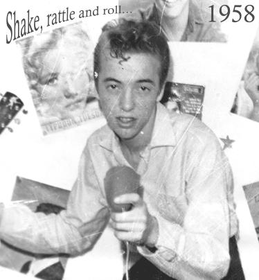

Rockehistorie:
“I Said, Shake, Rattle And Roll”
Jeg kom til rock and roll tidlig. I 1956 kjøpte jeg min første 78-plate til min dyrebare svarte reisegrammofon. Da var jeg tolv år gammel. Introduksjonen til rocken fikk jeg imidlertid av kommunistekteparet i etasjen under! De skjønte greit at den sovjetiske propagandaen mot rock som borgerlig og dekadent var fullstendig bak mål… I USA var det borgerlige politikere og konservative kristne som førte an i sin forgjeves kamp mot “djevelens musikk”.
Det ble raskt flere plater etter den første, og en liten revolusjon da 45 RPM singlene kom. Og omtrent samtidig EP-platene. Longplayplater var uoppnåelige. De kostet såvidt jeg husker trettiseks kroner og femti øre - det samme som olabuksene som vi i Kristiansund den gangen bare fikk kjøpt i en liten butikk på kaia som ganske enkelt het “Arbeidsklær”. Lee var merket.
Jeg ble snart en slik type med sleik og klær som de finere frøknene gyste av. Men ikke verre enn at noen av dem etterhvert dukket opp på “arbeiderklassefestene”. Med reisegrammofon var det aldri vanskelig å finne danseplasser. Flittig brukt var et par av tyskerbunkersene. Opplyst med bøtter fylt med sagflis og parafin. Jeg husker at en av de aller mest populære platene jeg hadde var Don Langs “Rock Around the Cookhouse”.
På Steinberget der jeg bodde hadde vi avstemninger opptil flere ganger i året blant ungdommen om hvem som var den mest populære artisten, og de mest populære i åra før og like etter 1960 var vanligvis Cliff Richard, Billy Fury, Elvis Presley, Connie Francis og Ricky Nelson. Ikke nødvendigvis alltid i den rekkefølgen. Konserter med kjente vokalister var det heller dårlig med i Kristiansund, men Per Elvis Granberg kom med stort følge, og seinere Roald Stensby. Forøvrig fikk vi nøye oss med å gå på kino, og det dukket opp noen rockefilmer etterhvert.
Drømmen om å stå på scenen
Den store drømmen var sjølsagt å bli rockesanger, og jeg gjorde da et tappert forsøk… Som “Little Danny” (!) ble jeg etterhvert ganske godt kjent lokalt. Noen ganger oppnådde jeg til og med den luksus å bli bakket av et ordentlig band - “The Terrific Snakes” med min gode venn Hans Kr. Hansen som rytmegitarist og bandleder.
De magre åra for en rocker kom fra 1963 med Beatles og Stones, osv. Jeg kunne godt tåle Stones og Animals, men Beatles var ingen ting for meg. Det gikk så langt at musikkinteressen sank til et grusomt lavmål. Jeg solgte til og med de fleste av platene mine. Såvidt jeg husker beholdt jeg kun noen singler og de tre LP-platene jeg hadde med Billy Fury, hvorav den ene var betaling fra “Det Nye” for å ha vært gjesteskribent på musikksida først på sekstitallet - det første honorerte bidraget jeg hadde på trykk! Skjønt, det var ikke stort den gangen som tydet på at jeg skulle bli forfatter.

Da rocken var skinndød, men sto opp
På den tida da Toini ble født lyttet jeg derfor ikke mye til musikk. Visene til Tom Paxton og Phil Ochs på grunn av tekstene deres, ellers litt blues, og jeg oppdaget Woody Guthrie og Jimmie Rodgers. Men av og til måtte jeg likevel finne fram noen gamle singler eller lytte til noen Luxenopptak på båndopptakeren. Billys “The Sound of Fury” og Wanda Jacksons “Right or Wrong” var god motgift når de tilsynelatende utallige piggtrådbandene gikk meg for mye på nervene.
Nyoppvåkninga kom imidlertid ikke før utpå syttitallet. Med plata “SUN ROCKABILLYS VOL.1”. For det første oppdaget jeg dermed rockesangere som var totalt ukjent for meg og som jeg straks likte og fremdeles liker godt, nemlig Billy Lee Riley og Warren Smith og Barbara Pittman, og for det andre tydet jo “vol.1” på at det ville bli flere. Og det ble det jo!
Til min forundring tok min femårige datter (i motsetning til sin to år eldre søster) til seg rock and roll med glød og iver og med suveren forakt for “barnslige” barnesanger og popmusikk. Hun maltrakterte de gamle utklippsbøkene mine og fylte veggen over senga si med rockere! Det skulle nå bli hennes bane og bestemmende for begivenheter som ingen av oss den gangen kunne ane noe om.
Så ble jeg forfatter…
Jeg fikk etterhvert kontakt med Rune Halland og begynte å kjøpe plater på postordre både i Norge og i Sverige. Det var forresten også på denne tida at jeg debuterte som forfatter med novellesamlinga “DIMENSJON S” og tok den endelige beslutninga om å skrive på heltid. Kort etter klipte jeg også håret, tok tilbake den gamle sveisen min og tolererte det jeg så i speilet bedre enn jeg hadde gjort på lenge. Her kunne jeg forresten fortalt ei historie som Toini nok ikke ville like, så det skal jeg la ligge for familiefredens skyld.
Bladet “Whole lotta rockin” fortalte meg at jeg slett ikke var alene i verden som fremdeles likte rock and roll, og jeg skrev et par-tre sære noveller i bladet. Seinere også artikler som jeg i tillegg fikk på trykk i lokalavisa. Blant annet en om Charlie Feathers, dersom jeg ikke husker feil. Etterhvert skrev jeg også i arvtakeren ROCK, sjøl om det er blitt sjeldnere enn jeg egentlig kunne ønsket. Men for en som lever av å skrive bør jo flest mulig av timene ved tastaturet være inntektsbringende.
Etterhvert som jeg fikk bedre og nærmere kontakt må jeg innrømme at jeg nok fant det nye rockemiljøet vel fjernt fra mye av det jeg sjøl hadde opplevd på femti- og begynnelsen av sekstitallet, særlig syntes jeg at mye av vår nesten bunnløse og muligens ganske naive romantikk og våre æresbegreper med rot i arbeiderkulturen var forsvunnet og erstattet med en nokså påtatt tøffhet der sveisene var akkurat litt for høye og skinnjakkene litt for struttende og respekten for jentene alt for liten. På femtitallet var det tross alt de, mye mer enn de fleste gutta, som “drev” rockemiljøet. Av guttene i min klasse på skolen var vi kanskje fem-sju som brydde oss om musikk, resten var fotballhoder. Jentene i paralellklassen derimot… Jeg skulle nesten til å si at jeg elsker dem ennå, men det er nok minnet jeg elsker.
Det var en kultur vi var en del av, og jeg våger å si en arbeiderklassekultur. Det er kanskje derfor de velutdannede kulturbyråkratene har så liten respekt for den kulturen som er min. Vår. Uten å blunke rev de f.eks. “Rundhuset” på St.Hanshaugen i Kristiansund, ett av de stedene som virkelig betydde noe for oss unge i hine hårde dager. Der danseplatten lå står det nå en idrettshall! Rundhuset sto forresten såpass lenge at Toini rakk å bruke det som øvingslokale da hun hadde gruppa Katz.
Toini tar kommandoen!
Som man lett kan forstå med en etterhvert svært så (ut)øvende musiker i huset gled musikkinitiativene- og kunnskapene greit over fra far til datter, og langt seinere, etter at Toini hadde flyttet til Oslo og hadde begynt å gjøre seg gjeldende syntes jeg faktisk det var svært så morsomt da Puls anmeldte min rock and roll roman “Kalis sang” under tittelen “FAREN TIL TOINI”!
En gledelig ting som har skjedd er sjølsagt alle de bra nye vokalistene pluss band som har dukket opp, inkludert naturligvis Toini & The Tomcats, sjøl om jeg kan dy meg litt for det ensidige stakkato rockabillykjøret mange band kjører, der så mange låter høres ut som blandinger av Johnny Burnettes “Lonesome train” og Elvis “Baby Let’s Play House”. Litt mer variasjon kunne jo gjøre seg. Likevel er det i disse banda at rockens framtid ligger. Gamle guder kan fremdeles trekkes fram og lyttes til, men egentlig synes jeg det er lenge siden rocken har hatt stort å takke Amerika for. Jeg er fremdeles hjertens enig med meg sjøl der! (Jeg prøvde å provosere i gang en debatt om dette i ROCK nr.6 1985, men det ble ikke stort til debatt).
Musikken lever videre
Takket være de nye vokalistene og banda lever musikken videre og utvikler seg også som en levende organisme i stedet for å være en museumsgjenstand. Jeg er særlig glad for de mange dyktige kvinnelige vokalistene og musikerne! Hvis rocken blir en gutteting vil den ikke bare dø, den fortjener til og med å dø. Rocken var i sin tid et arbeiderklasseopprør, og hvis det er reaksjonære idioter og mannssjåvinister som skal styre musikken og miljøet videre, bør den heller gå i grava så snart som råd og overlates til oss “museumsbestyrere”, mens gutta boys kan kose seg med cowboyhelter i stedet.
Det virker en smule patetisk når så mange festivalreferater kun er fylt av gamle tryner som på alle måter har sett sine beste dager og kun knirker i vei på tonn med rutine. Noen av dem kunne vært mine fedre, og jeg er femtifem! Sjølsagt har jeg også tenkt å ta med meg rocken og rockefoten (såfremt den fremdeles virker) til gammelhjemmet og gjøre Helvete hett for eventuelle puritanske kristninger, men jeg tror absolutt ikke jeg vil trekkes ut på mimrekonsert. Det høres mest ut som et mareritt.
Da har jeg mere sans for Øyvind Myhres drøm, slik han lanserer den i forordet til boka “Operasjon Ares”:
“Jeg har en drøm som holder meg oppe i tunge stunder: Jeg veit at som avfeldige åttiåringer skal Ingar og jeg gå fjelltur på Olympus Mons, solsystemets høgeste fjell, 28 km høgt. På toppen skal vi se ut over den røde ørkenen og Tharsis-kjeden, noen puslete vulkaner på bare 15 til 20 000 meter. Så skal vi pipe i skjelvende gammelmanssfalsett, ut mot de kalde stjernene; “Shake, rattle and roll–I said, shake, rattle and roll–”.
Denne artikkelen sto på trykk i bladet ROCK, høsten 1999.
Les mer om rock: